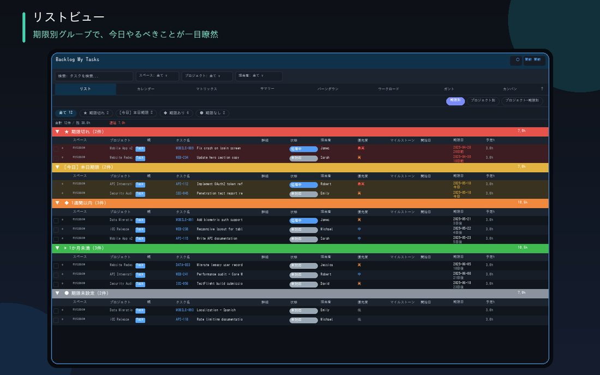

每朝的確認一鍵完成。最上方嘅可收合小工具儀表板令您一眼掌握今日狀況，從按期限自動排列嘅任務列表，到狀態變更、留言回覆，全部在此完成。

已逾期、最近完成、最近瀏覽嘅任務、各項目件數等資訊以卡片形式顯示喺最上方。可拖曳調整順序，並以▲/▼按鈕收合
自動分組為逾期、今日、一週內等，並以顏色即時顯示風險程度
一鍵篩選（按鍵1至5），並可橫跨標題、編號、負責人搜尋
多選任務後可一次過變更狀態、期限及負責人。右鍵按一下即可立即編輯標題、詳情，或變更完成狀態、期限等
其他人的新留言會自動浮到列表最上方，💬按鈕亦會亮起黃色，讓你即刻留意到